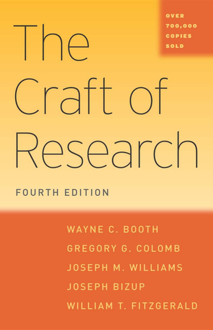

Drawing the boundary around your question and your hypothesis, then knowing your instrument
Scope is not a limitation you apologize for. It is the boundary around what your evidence can actually test.
Claiming your retrofit works against EF5 tornadoes when your loading represents EF2–3.
That isn’t ambitious. A committee member will find the gap in one question.
Claiming you validated a method when you replicated a published result.
That isn’t generous. It hides what you actually showed.

As paradoxical as it seems, you make your argument stronger and more credible by modestly acknowledging its limits… Limit your claims to what your argument can actually support by qualifying their scope and certainty. — Booth et al., The Craft of Research, §8.3, p. 129
You need a boundary on both. They are drawn differently.
Which problem are you asking about? Which structures, hazards, and conditions does the answer need to cover?
Set by the gap and by who cares about the answer.
Under what conditions can your evidence actually tell your answer apart from the competing one?
Set by your data, your model’s assumptions, and your loading.
If the hypothesis scope is narrower than the question scope, say so. That gap is where your answer stops and future work starts.
Ask: under what conditions can my evidence actually tell hypothesis A apart from B and C? That’s your scope.
Low-strength lime-mortar brick walls. Surface-mounted composite strips. The loading range my load model represents.
Modern cement-mortar masonry. Other retrofit families. Loading beyond what my load model represents.
Every boundary needs a reason: the material data I have, the assumption my model makes, the loading my code provisions cover. “I didn’t have time” is not a reason. “The model assumes X, which stops holding past Y” is.
Four parts. One short paragraph. No tool names unless the tool sets the boundary.
Write it once for your question and once for your hypothesis.
Test: could a committee member push on any one of your boundaries and find you don’t have a reason? Then that boundary isn’t designed yet.